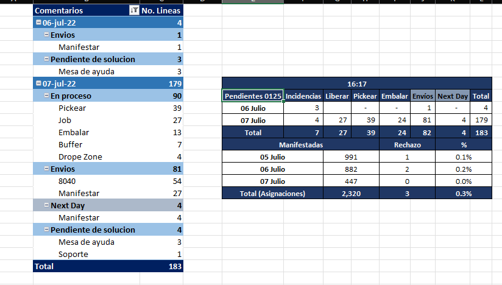
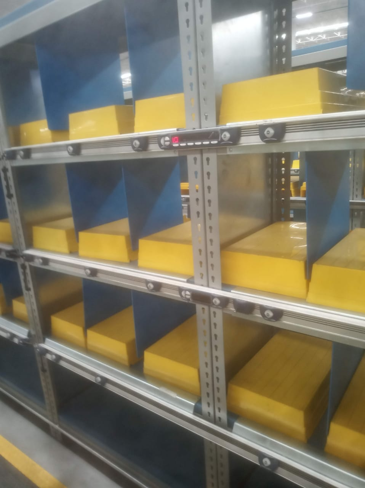

El proceso de VAD (“ventas a distancia”) inicia con las compras que se efectúan en línea, por teléfono o por la app estas ventas son procesadas por un sistema y compartidas en un documento.
Con este documento los colaboradores de VAD realizan un reporte cada 30 minutos en el que avisan a las áreas (“zona cero, racks, mecanox ,mesanin”) para realizar el surtido de esta mercancía.
Reporte final VAD
El buffer es una sección de VAD en el que la mercancía es deposita con la particularidad que aquí llega la mercancía cuando un cliente realiza dos o más pedidos. La mercancía puede tener diferente o mismo SKU, pero el número de piezas debe ser mayor o igual a 2.
Se valida que sea el C origen y los SKU de los productos, se confirma y se libera, para confirmar se escanea la C origen y la etiqueta del buffer y se oprime el botón liberar.
Después se almacena en una caja (“se le da una ubicación”). Del otro lado se saca de esta ubicación y se pasa a la zona de embalado donde se genera la etiqueta de envió y se coloca en el sorter.
Cajas de buffer